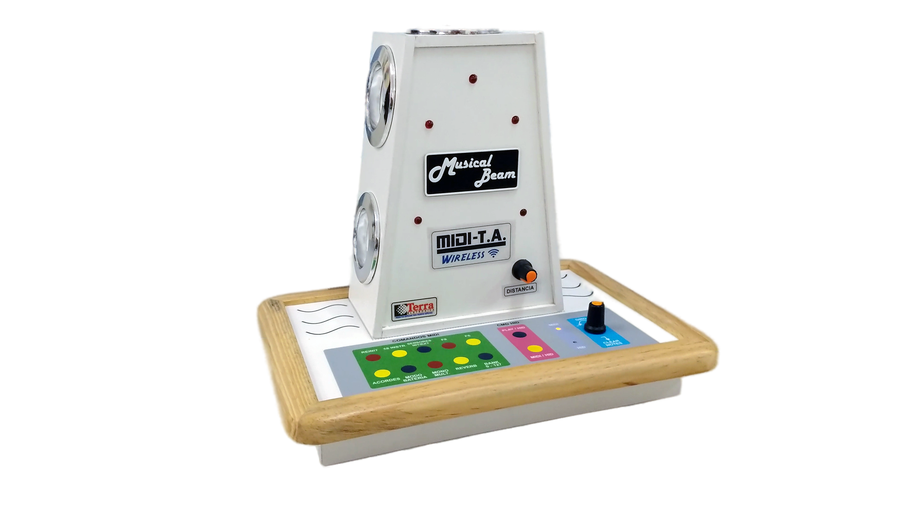

MUSICAL_BEAM_05
Controle musical no ar como mágica - sem toque físico

Música Criada por Movimentos Simples
O MUSICAL_BEAM_05 é um controlador MIDI revolucionário que permite criar música através de movimentos corporais simples, sem qualquer toque físico. Uma torre em formato de farol com 5 sensores de distância que transformam gestos em música como mágica.
Sensores Avançados
5 sensores de distância com alcance de 1 metro cada, detectando os menores movimentos
Totalmente Inclusivo
Ideal para pessoas com reduzida capacidade motora - funciona até com movimentos de bebês
Versátil e Expansível
Suporta até 5 sensores opcionais destacáveis com clips para posicionamento independente
Performance Mágica
Regência musical no ar, acionamento de notas e efeitos musicais sem contato físico
🎵 Transforme movimentos em música! 🎵
Perfeito para: Pessoas com mobilidade reduzida • Musicoterapia avançada • Performances corporais • Dança musical • Instalações interativas
Especificações Técnicas
Torre Sensorial
- Sensores: 5 sensores de distância integrados
- Alcance: 1 metro por sensor
- Formato: Torre estilo farol
- Acionamento: Totalmente sem toque físico
Expansão Opcional
- Sensores Extras: Até 5 sensores destacáveis
- Conexão: Cabo de 3 metros
- Fixação: Clips resistentes
- Posicionamento: Independente e versátil
Conectividade
- Comunicação: Totalmente wireless
- Modo MIDI: Controlador MIDI padrão
- Modo HID: Emula teclado do computador
- Compatibilidade: Programas como BEAMZ
Energia
- Bateria: Lítio interna
- Autonomia: 10 horas contínuas
- Carregador: 5V padrão celular
- Indicador: LED de status de bateria
Aplicações Inovadoras
Descubra as possibilidades infinitas do MUSICAL_BEAM_05
Musicoterapia Avançada
Perfeito para pessoas com mobilidade reduzida, permitindo expressão musical através dos menores movimentos
Atividades Lúdicas
Ideal para crianças, escolas de música e atividades em grupo, proporcionando diversão e aprendizado
Performances Corporais
Dança musical, festas temáticas e apresentações artísticas ganham nova dimensão interativa
Instalações Interativas
Árvores de natal musicais, praças, shoppings e condomínios com experiências sonoras únicas
Como Funciona a Magia
Detecção de Movimento
Os sensores laser captam qualquer movimento corporal: braços, pernas, cabeça, cadeira de rodas ou até mesmo respiração
Processamento Inteligente
O sistema converte os movimentos detectados em comandos MIDI ou HID, permitindo controle total da música
Resposta Musical
Cada sensor pode acionar notas, instrumentos, efeitos musicais ou regências, criando uma sinfonia no ar
Experiência Mágica
O resultado é uma experiência musical única onde os movimentos se transformam em música de forma natural e intuitiva
Revolucione a Experiência Musical Interativa
O MUSICAL_BEAM_05 quebra todas as barreiras da música tradicional. Desenvolvido com tecnologia brasileira de ponta, oferece uma nova forma de interação musical completamente inclusiva e acessível para todos.